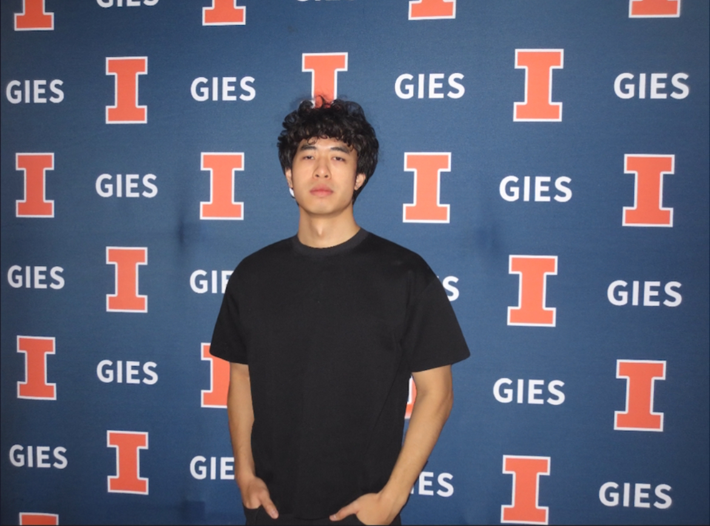

精通 Python、R、SQL 及机器学习算法（随机森林、提升算法、神经网络、因果分析）。熟练使用 NumPy、Pandas、Scikit-learn。
在投资研究、财务分析和战略咨询方面经验丰富。专注于市场研究、成本分析和商业战略。
专注于利用 AI 进行敏捷开发，创建数据收集分析的自动化工作流程，帮助企业完成数字化转型与 AI 融合。
作为一名认证 Scrum 产品负责人（CSPO®），我毕业于 UIUC，获得商业分析硕士和会计学士学位。我专注于数据驱动决策和商业战略，经验涵盖供应链、制造业、技术和金融服务领域，为成本优化和运营效率提供了有效的解决方案。
我对新兴技术充满热情，目前正在探索 AI 在业务流程优化中的应用。除了专业追求，我还领导着一支篮球队，研究运动学，并涉足美食烹饪和哲学讨论等多个领域，为工作带来全面的视角。
2025.04 - 至今
Lead Researcher
smartice.ai — AI 驱动餐饮管理
主导全栈 AI 产品开发，覆盖库存、培训、视觉检测、营销自动化和硬件。设计 Claude Code 驱动的 Agentic 开发工作流快速构建 MVP。
2025.01 - 至今
Growth Analyst Intern
Source Ready — 供应链 SaaS 初创公司
通过 Reddit 策略和媒体合作将 Google SEO 提升 300%。使用 Crew.ai 和 AI 驱动的自动化方案执行增长策略。
2024.08 - 至今
Data Analyst
US Pharmacopeia — 药品标准组织
使用 Python 开发 AI/ML 驱动的自动化数据采集工作流，跨 15 个网站、300 个关键词的爬取流水线。
2024.07 - 2024.08
Investment Researcher
开封投资 — 公募基金
研究泛娱乐板块，利用 Perplexity AI 获取市场趋势，Wind 进行财务数据分析。深圳主要零售门店实地调研。
2024.05 - 2024.06
Investment Analyst Intern
GYJA 私募 — 私募股权
使用 Wind/Bloomberg 进行制造业和能源行业研究，主导投资风控与尽职调查。
2024.01 - 2024.05
Cost Analyst
Molex — 制造与电子
主导中国外替代制造地点的战略框架，开发集成经济与地理数据的成本模型，降低搬迁成本 20%。
2023.06 - 2023.08
Consultant Intern
BDO Consulting — 全球咨询公司
主导 Infineon 和 Semikron 销售，产生 70 万美元原型订单，一周内签下合同。对德国竞争对手实现 60% 成本优势。
2024.08 - 2025.05
Master of Science in Business Analytics
University of Illinois Urbana-Champaign
GPA: 3.7/4.0 — 商业分析、金融数据分析、机器学习等课程
2021.08 - 2024.05
Bachelor of Science in Accounting
University of Illinois Urbana-Champaign
GPA: 3.9/4.0 — 三年提前毕业，涵盖会计、金融、商业分析等课程
连锁餐厅语音 AI 驱动的库存录入系统，讯飞 ASR + 通义千问结构化提取，4 角色 RBAC 权限控制。
面向中国粮油含权贸易市场的全栈 B2B 平台，基差定价、资金流转、盈亏计算，Docker 一键部署。
全栈数据采集与 AI 标注平台，Playwright 多账号实例管理，Gemini Flash 图文分类，SSE 实时状态。
让 Claude 等 AI 助手直接调用工具爬取淘宝/天猫商品数据，持久化 Playwright Session 保持登录。